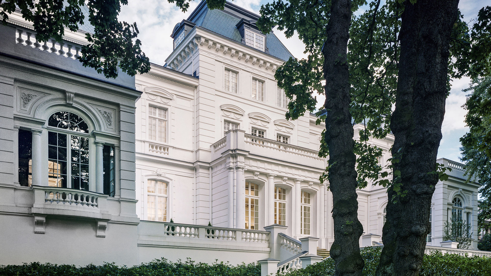

Das perfekte Miteinander von Schönheit und Technologie.
KORN steht für höchste Fensterkompetenz im exklusiven, internationalen Villenbau. Das Familienunternehmen wurde 1946 gegründet.
Spezialisiert auf besonders anspruchsvolle Projekte für Architekten und Bauherren mit außergewöhnlichen Anforderungen.
Erworben hat sich KORN seine führende Stellung als Erfinder innovativer Fenstersysteme — wie der »Sprosse 22«, die viele Häuser vor der Kaputtsanierung rettete.
Unsere Holzfenster KORN LIGNUM fertigen wir in eigener Produktion auf 5.000 Quadratmetern in Wedel bei Hamburg — im Design wie in der Qualität allen Wettbewerbsprodukten überlegen.

»Wir wollten immer das Besondere: gemeinsam mit Architekten etwas Einmaliges schaffen und für jedes Projekt das ideale Mischungsverhältnis von Technologie und Schönheit ausloten.« Wilhelm Korn — Geschäftsführer Cornelius Korn GmbH
Was bedeutet »Schönheit« in diesem Zusammenhang?
Fenster waren früher Statussymbole und Ausdruck guten Geschmacks. Im letzten Jahrhundert wurde das häufig vergessen — KORN hat daraufhin die Sprosse 22 entwickelt und schützen lassen: eine schöne, stilsichere und hochfunktionale Fensterkonstruktion für Modernisierungen im Einklang mit dem Denkmalschutz.
Was kann ich als Architekt und Bauherr von KORN erwarten?
Als Architekt: ein konkurrenzloses Leistungspaket aus einer Hand — Beratung, Werkplanung, Produkt, Montage und Service für exklusive Villen an jedem Ort der Welt. Als Bauherr: Fenster und Türen, die über Generationen schön, funktional und wertstabil bleiben.
Wie finden Kunden eine wirklich individuelle Lösung?
Indem wir gleich zu Beginn aufzeigen, was möglich ist. Es gibt unendlich viele Varianten — Gestaltung, Materialauswahl, Sicherheitsstufen, Moskito-, Schall- und Sonnenschutz. Mit einer ausgefeilten Systematik finden wir genau die passende Lösung.
Mit welchen Architekten hat KORN gearbeitet?
Stellvertretend: Robert Stern, Frank O. Gehry, David Chipperfield, Gerkan Marg und Partner, Francis Terry, Sebastian Treese, Ulrike Krages, Hans Kollhoff, Allan Shope sowie Randall Stofft und John Cooney.
Zu Hause auf der ganzen Welt
Erste US-Projekte 1985, Russland ab 2006 — heute baut KORN an jedem Ort der Welt.

Seit 1946
- 1946
Gründung der Cornelius Korn GmbH
- 1979
Wilhelm Korn übernimmt die Geschäftsführung
- 1980
Entwicklung der renommierten Sprosse 22
- 1985
Erste Projekte in den USA
- 2004
Gründung der KORN Windows & Doors GmbH
- 2006
Erste Projekte in Russland
- 2017
Erweiterung der Produktion
- 2019
Einführung der Produktlinie LIGNUM SECURE